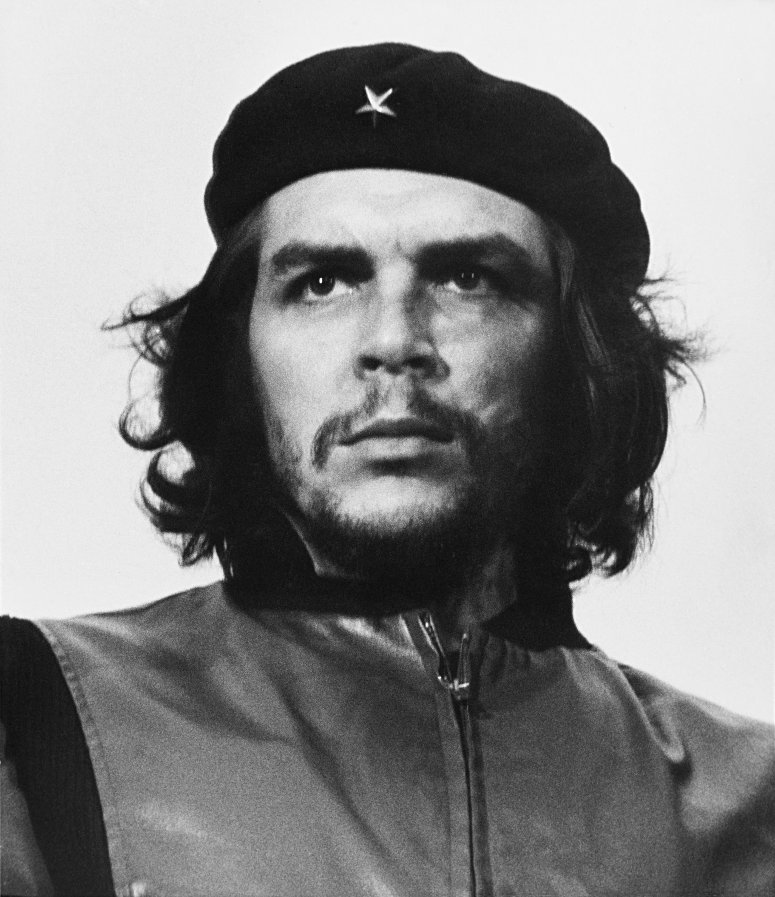

Revolutionary, Physician, Author, and Historical Figure
Viewing on Mobile Device Learn His StoryBorn in Argentina in 1928, Ernesto Guevara trained as a physician before traveling across South America. His experiences with widespread poverty and social inequality transformed his views, leading him to play a central role in the Cuban Revolution alongside Fidel Castro.

Motorcycle journey across South America shaping his socio-political views.
Played a key role in the success of the Cuban Revolution.
Traveled internationally to support revolutionary movements in Africa and Bolivia.
His stylized image became a ubiquitous countercultural symbol of rebellion and global pop culture.
Authored books including 'The Motorcycle Diaries', chronicling his youth, travel, and personal growth.
Remains one of the most debated and influential historical political figures of the 20th century.